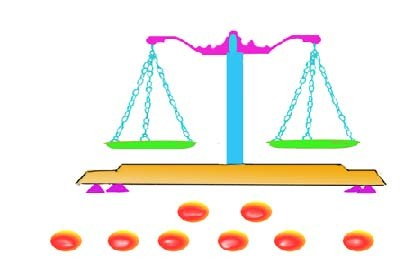
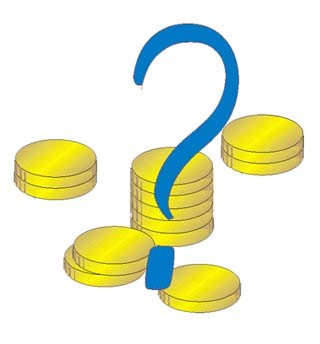

根据前面的说明，我们知道:只利用天平秤量三次，就可以从十二个硬币中找出伪币，且知道伪币是较轻或是较重。
称重量简体
这里有二道题目，都非常出名，第一题比较简单，第二题则需要用点脑筋。
第一题：8个弹珠，哪一个比较轻？
有8个弹珠，其中有一个弹珠比较轻，但是大小、形状、颜色都相同。你是否使用天平称二次，就找出那个比较轻的弹珠？

图： 8个球，其中有一个弹珠较轻，你是否使用天平称二次，就找出那个比较轻的弹珠？
第二题：有十二个钱币，其中有一个是伪币，真币的重量、大小皆相等，而伪币的重量则与真币不同，你能不能只用天平秤三次，就可决定那一个是伪币，并指出伪币的重量是较轻或较重?

图：12个钱币，其中有一个是伪币，你能用天平秤三次，就可决定那一个是伪币，并指出伪币的重量是较轻或较重?
第一题：8个弹珠，哪一个弹珠比较轻？答案。
把弹珠分成3组，有二组每组3个，另一组只有二个。将有三个的二组放在天平上，若重量不等，轻的一组里一定有一个轻的弹珠，取这组的其中二个在天平再称一次。如二边不等，则轻的一边的弹珠就是，否则放在一边未称的弹珠就是。若二组（每组皆三个）在天平皆相等，则轻球一定在第三组（二个球）中，将二个弹珠放在天平上，取轻的那边的弹珠。
第二题：12个钱币，哪一个是伪币？答案。
其答案如下:
第一步:将十二个硬币分成三组，每组各四个，再把第一、二组分别放在天平的两端，若天平两端平衡，则伪币在第三组中;若天平两端不平衡，则伪币在第一或第二组中。
第二步:就上面讨论的第一次秤得的两种情形分别说明第二次的秤量方法:
1. 若伪币在第三组中，则在第一组中任取三个钱币(都是真币)放在平天的一端，另在第三组中任取三个钱币放在天平的另一端。若天平两端平衡，则伪币是第三组的第四个;若天平两端不平衡，则伪币在从第三组中取出做第二次秤量的三个钱币之中。
2.若伪币在第一或第二组中，将两组中较重的一组取出任意两个及另一组中 任意一个钱币放在天平的另一端，再将较重一组的另外两个及另一组中另外任意一个放在天平的另一端。若天平两端平衡，则伪币在较轻一组中没被取出做第二次秤量的两个钱币之中，而且伪币比真币轻。若天平两端不平衡，则伪币是下面三个钱币之一;即在天平较重那一端而取自较重一组的「那两个或」在天平较轻那一端而取自较轻一组的那「一个」。这是因为:若伪币在较重一组，则伪币比真币重;若伪币在较轻一组，则伪币比真币轻。
第三步:我们就第二次秤量所得的四种情形分别说明第三次的秤量方法:
1.若伪币在第三组而第二次秤量时天平两端平衡，则伪币是第三组中的第四个，将这个 伪币与任意一个真币作第三次秤量，就可知道伪币的重量是较轻或较重。
2.若伪币在第三组而第二次秤量时天平两端不平衡，则伪币在从第三组中取出做第二次秤 量的三个钱币之中。如果这三个较重，则伪币较重;如果这三个较轻，则伪币较轻。这时我们任取这三个中的两个，分别放入天平的两端。若两端平衡，则伪币是这三个中的另一个;若两端不平衡，则伪币是做第三次秤量的两个硬币中之一，是那一个呢?若伪币较重，那么重的那个就是;若伪币较轻，那么轻的那个就是。
3.若伪币在第一或第二组中而第二次秤晕时天平两端平衡，则依第二步2 的说明，已知 伪币在第二组没被取出做第二次秤量的两个之中，而且伪币较轻。只要将这两个钱币分别放入天平两端做第三次秤量，较轻的那个就是伪币。
4.若伪币在第一或第二组中而第二次秤量时天平两端不平衡，则依第二步2 的说明，已知伪币是下面三个硬币之一:不是在较重那一端取自较重一组的那「两个」就是在「较轻那一端而取自较轻一组的那一个」。只要将这三个中取自较重那一组的那两个分别放入天平的两端再称。若天平两端平衡，则伪币是这三个中取自较轻的那一个而且比真币轻;若天平两端不平衡，则较重的那个就是伪币，且伪币较重。